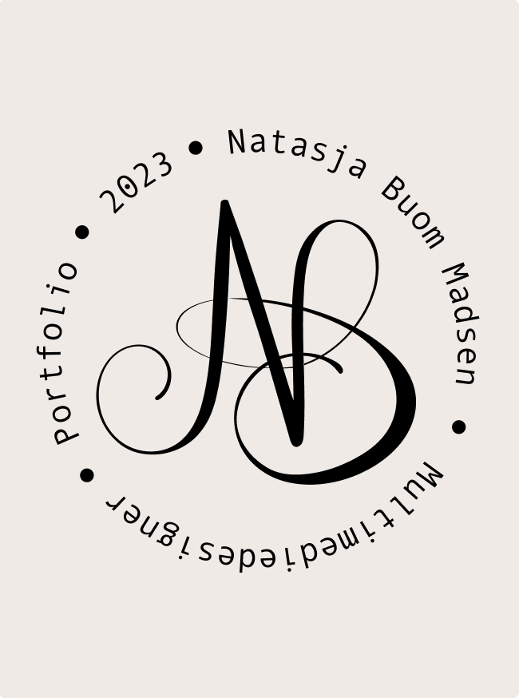

Grafiske Projekter
Bag kulisserne af kreativ Grafisk Design

Mit Logo
Logo Eksempel

I denne skoleopgave har vi arbejdet i grupper.
Vi har sammen udviklet et website, der fremmer bæredygtige valg.
Med fokus på bæredygtighed og en defineret målgruppe guider vores site brugerne gennem en meningsfuld rejse,
der udfolder værdien af at købe en brugt telefon.
Min rolle i denne opgave har ligget mest i designet og målgruppen.
Dette var den første opgave på 1. semester, min case var at Dyreværnet var ved at
lancere en ny informationskampagne til kæledyrsejere i byområder.
De vil gerne have lavet et website, hvor de informere om hvordan kæledyr har et godt og værdigt liv,
og om de rettigheder husdyr reelt har jf. Dyrevelfærdsloven fra 2021.
Siden skulle hjælpe kæledyrsejere med at finde råd og vejledning til at skabe det gode kæledyrs liv.
I denne skoleopgave har vi i grupper valgt et eksisterende produkt,
og lavet en twist af produktet.
Vi har lavet en landingpage, med en reklame video
der omhandler den nye smag.
vi har sammen fundet på en smag der passer til den
målgruppe vi har haft fokus på, og lavet reklamen
ud fra denne.
Vi har haft fokus på at beholde den orginale gule farve som Dr. Nielsen bruger selv.
Opgaven gik ud på at finde en hjemmeside som ikke var brugervenlig.
Derefter skulle jeg finde ud af hvad målgruppen var, lave wireframes, usability-test,
userflow og meget mere for at til sidst skulle lave mockups/ prototyper.
Undervejs i processen har jeg arbejdet meget med Figma, og lidt i photoshop og gloomap.
Prototypen der ses her på siden er lavet i Figma.
Undervejs havde jeg meget fokus på at lave en nemt og overdkuelig kunderejse.
Bag kulisserne af kreativ Grafisk Design
Kontakt Mig Her